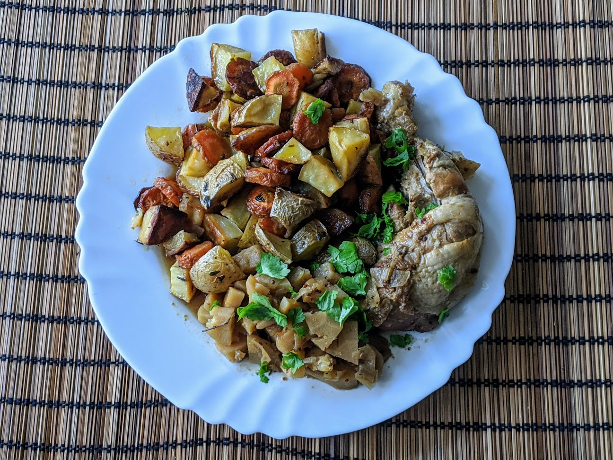

Ragoût de poulet à la moutarde

Ici avec des [carottes et patates rôties](LegumesRotis.html)
Pour 6 personnes :
- Huit cuisses de poulet, avec la peau
- Deux grosses cuillères à soupe de moutarde à l'ancienne
- Une grosse cuillère à soupe de moutarde douce
- Deux grosses cuillères à soupe de miel liquide
- Deux oignons
- 300g de panais (ou, à défaut, de carottes)
- Quelques branches de thym
- Un litre de bouillon de légumes ou de volaille
- Un bouquet de persil plat
- Sel, poivre, huile d'olive
- Dans un saladier, mélanger les moutardes et le miel. Saler et poivrer les cuisses de poulet et les badigeonner de la préparation à la moutarde. Laisser reposer une demi-heure, que ça parfume bien le poulet.
- Pendant ce temps, éplucher et hacher les oignons et les panais. Hacher également le persil.
- Dans une grande cocotte allant au four, faire dorer les cuisses de poulet à feu assez vif, environ dix minutes. Gratter régulièrement le fond de la casserole, le mélange miel/moutarde a tendance à brunir rapidement. Retirer la viande une fois qu'elle est bien rissolée.
- Faire préchauffer le four à 160°C (thermostat 5-6). Faire dorer les oignons au fond de la cocotte, en remuant pour que ça s'imprègne du jus de cuisson. Ajouter les panais, le thym, mouiller avec le bouillon, porter à ébullition.
- Remettre les cuisses de poulet dans la cocotte avec leur jus, en faisant attention à ce que ça soit bien immergé. Saler, poivrer, couvrir et laisser à mijoter une heure et demie au four, en vérifiant de temps en temps que ça ne se dessèche pas (et en rajoutant de l'eau si nécessaire).
- Lorsque la cuisson est finie, retirer les branches de thym, rectifier l'assaisonnement si nécessaire, ajouter le persil, et servir chaud avec des légumes verts cuits à la vapeur.